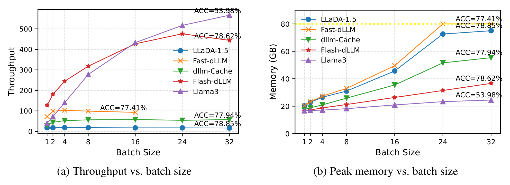
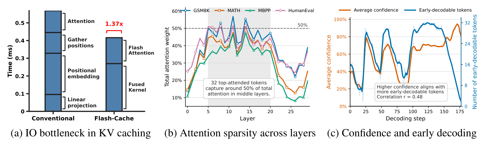
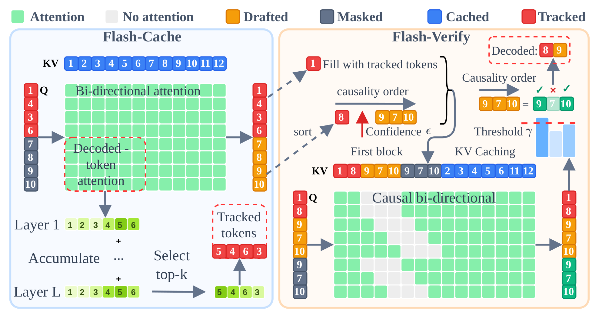
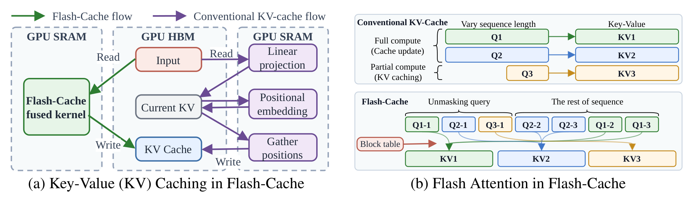
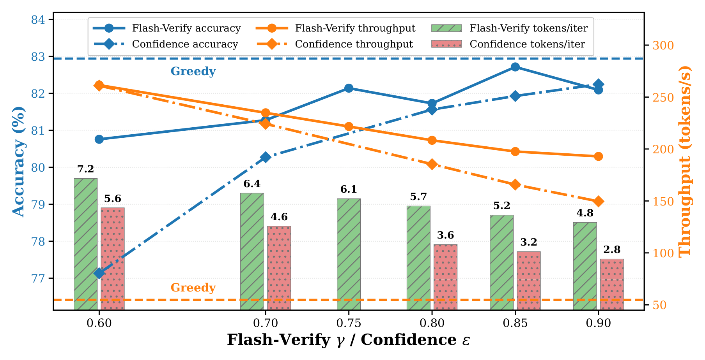
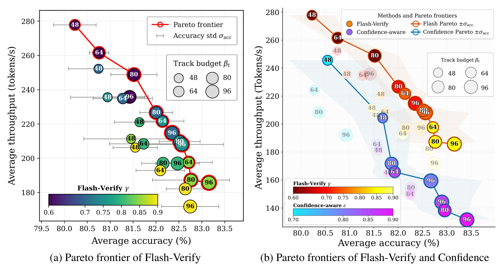

Diffusion large language models (dLLMs) generate text by iterative denoising, so they can decode many tokens at once. In practice their inference is still slow. Every denoising step revisits the whole sequence, which forces frequent KV-cache updates, and parallel decoding has to stay conservative to protect quality.
Flash-dLLM is a training-free framework that speeds up both parts together. Flash-Cache is an IO-aware KV cache built on a fused GPU kernel. Flash-Verify is a draft-and-verify decoder in which the dLLM checks its own drafts, with no auxiliary model. On LLaDA-1.5, Flash-dLLM reaches 210.6 tokens/s on GSM8K. It is 5.1× and 11.0× faster than Elastic-Cache on GSM8K and HumanEval, and up to 148× faster than decoding without a cache.


The bottleneck: why a KV cache is not enough
KV caching and parallel decoding are usually studied separately. When the two are combined, three effects limit the speedup.
- Memory I/O dominates cache updates. A cached step launches separate kernels for the QKV projection, the rotary embedding, the cache write and attention. Each kernel writes its intermediate tensors to GPU memory (HBM), and the next kernel reads them back. These operations do little arithmetic, so the memory traffic can cost more than the computation that the cache saves. Fusing them gives a 1.37× speedup per layer.
- Only a few decoded tokens matter. Masked positions attend mostly to a small set of decoded tokens. In the middle layers of LLaDA-1.5, the top 32 tokens receive about 50% of the attention. Refreshing every decoded token at every step wastes compute.
- Confidence thresholds are conservative. Confidence-aware decoding keeps only the tokens above a threshold. Many of the rejected tokens are already correct, and they have to wait for a later step.


The Flash-dLLM approach
Flash-dLLM has two components. They share one fused kernel and one pre-allocated KV cache.


Flash-Cache: IO-aware KV caching
The first pass processes the whole sequence and fills the cache. Every later step recomputes only a small query of fixed size and reuses the cache for everything else. Three pieces make this cheap.
- Fused KV-cache kernel. One Triton kernel does the QKV projection, the rotary embedding and the cache write. Intermediate keys and values stay in fast on-chip memory and go straight to their final cache slots, so they are never materialized in HBM.
- Scheduled flash attention. Samples in a batch need queries of different lengths at each step. A block table maps every query block to its cache blocks, so full and partial computations for different samples run together without padding.
- Selective tracking. The query holds the current masked window plus a fixed tracking budget: the tokens that were just decoded and the decoded tokens that receive the most attention. All other positions are served from the cache, which bounds the cost of every step.


Flash-Verify: the model verifies its own drafts
Flash-Verify recovers the correct tokens that a confidence threshold would throw away. The dLLM is both the drafter and the verifier.
- Draft. One forward pass predicts a token for every position in the masked window.
- Accept the confident tokens. Predictions with confidence of at least ε are decoded directly.
- Verify the rest in one extra pass. Each remaining position enters the query twice: once filled with its draft token (the draft view) and once as
[MASK](the mask view). A causal attention mask lets a mask-view position see the drafts before it in the order, but never its own draft. - Accept until the first mismatch. A draft is accepted when the mask view predicts the same token with confidence of at least γ. As in speculative decoding, acceptance stops at the first rejection.
The verify pass reuses the fused kernel and the cache, and its cost grows with the masked window, not with the sequence. Flash-Verify decodes 5.7 tokens per step, against 2.8 for confidence-aware decoding and 1.0 for greedy decoding. A block of m accepted tokens deviates from the model's own sequential distribution by at most 1 − γm in total variation.


Results
All numbers are measured with LLaDA-1.5 on a single NVIDIA A100 80GB.
Four benchmarks at generation length 512
Flash-dLLM has the highest throughput on every benchmark. Its accuracy is higher than the uncached baseline on GSM8K, MATH and MBPP, and 0.61 points lower on HumanEval.
| Benchmark | Metric | LLaDA-1.5 | Fast-dLLM | Elastic-Cache | Flash-dLLM |
|---|---|---|---|---|---|
| GSM8K (5-shot) | TPS ↑ | 2.6 (1.0×) | 36.8 (14.2×) | 41.7 (16.0×) | 210.6 (81.0×) |
| Score ↑ | 81.35 | 80.82 | 82.79 | 83.02 | |
| MATH (4-shot) | TPS ↑ | 5.0 (1.0×) | 44.4 (8.9×) | 41.4 (8.3×) | 210.1 (42.0×) |
| Score ↑ | 35.63 | 33.68 | 35.84 | 35.98 | |
| HumanEval (0-shot) | TPS ↑ | 3.2 (1.0×) | 15.4 (4.8×) | 16.8 (5.2×) | 185.6 (58.0×) |
| Score ↑ | 40.85 | 36.59 | 37.80 | 40.24 | |
| MBPP (3-shot) | TPS ↑ | 1.0 (1.0×) | 17.8 (17.8×) | 32.8 (32.8×) | 148.2 (148.2×) |
| Score ↑ | 38.20 | 36.20 | 39.00 | 39.00 |
TPS is throughput in tokens per second, with the speedup over LLaDA-1.5 decoded greedily without a cache. Score is accuracy or pass@1 in percent. Flash-dLLM is Flash-Cache with Flash-Verify.
Comparison with more acceleration methods
| Method (GSM8K, length 512) | TPS ↑ | Score ↑ |
|---|---|---|
| dKV-Cache | 14.9 (5.7×) | 81.50 |
| FlashDLM | 15.7 (6.0×) | 79.91 |
| dLLM-Cache | 16.8 (6.5×) | 80.97 |
| Fast-dLLM | 36.8 (14.2×) | 80.82 |
| Dyna-dLLM | 38.4 (14.8×) | 79.32 |
| Elastic-Cache | 41.7 (16.0×) | 82.79 |
| FreeDave | 42.8 (16.5×) | 80.97 |
| Flash-Cache (confidence-aware) | 149.4 (57.5×) | 82.87 |
| Flash-Cache + Flash-Verify | 210.6 (81.0×) | 83.02 |
Scaling with batch size
Throughput keeps growing up to batch size 32. At batch size 16, Flash-dLLM uses about 26 GB of GPU memory, against about 50 GB for Fast-dLLM (Figure 1).
| Flash-Cache with | Tokens / step | TPS at batch size | ||||
|---|---|---|---|---|---|---|
| 1 | 4 | 8 | 16 | 32 | ||
| Greedy decoding | 1.0 | 18.5 | 37.7 | 46.3 | 51.3 | 55.0 |
| Confidence-aware decoding | 2.8 | 51.7 | 102.4 | 120.5 | 131.8 | 139.5 |
| Flash-Verify | 5.7 | 56.0 | 131.3 | 164.8 | 186.2 | 199.8 |
GSM8K, 5-shot, generation length 512.
Accuracy and speed can be traded
The verification threshold γ and the tracking budget set the operating point. Across the tested settings, Flash-dLLM moves from 277.8 tokens/s at 80.23% accuracy to 131.6 tokens/s at 83.41%.


The same answer in fewer steps
One GSM8K prompt, decoded by LLaDA-1.5 without a cache. All three decoders return the correct answer.
| Decoding | Steps ↓ | Tokens | Time ↓ |
|---|---|---|---|
| Greedy | 283 | 283 | 64.7 s |
| Confidence-aware | 66 | 277 | 17.2 s |
| Flash-Verify | 30 | 276 | 13.1 s |
Conclusion
Flash-dLLM treats GPU memory traffic and token verification as one problem. A fused kernel makes the KV cache cheap to keep fresh, and the same cache lets the model verify its own drafts. Decoding gets faster and uses less memory, with no retraining and no second model.
Citation
@misc{nguyentri2026flashdllm,
title = {{Flash-dLLM}: IO-Aware KV Caching and Parallel Decoding for Fast, Memory-Efficient Diffusion LLMs},
author = {Nguyen-Tri, Quan and Ranjan, Mukul and Shen, Zhiqiang},
year = {2026},
eprint = {2609.26796},
archivePrefix = {arXiv},
primaryClass = {cs.CL}
}